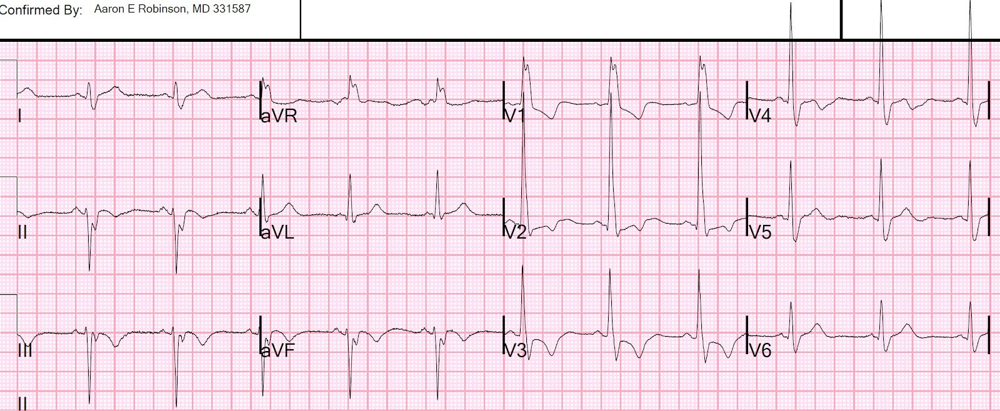
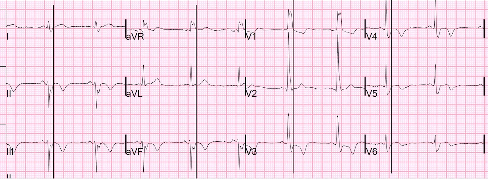
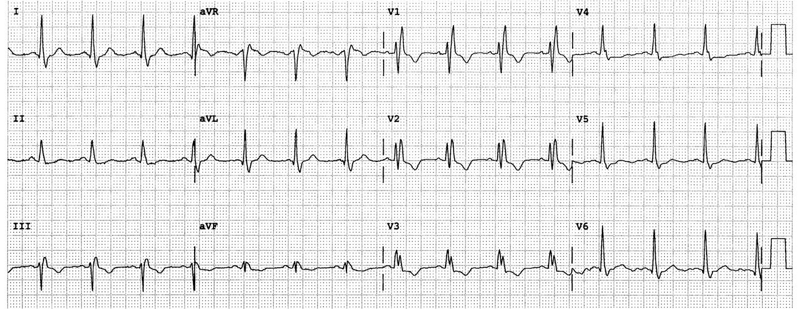
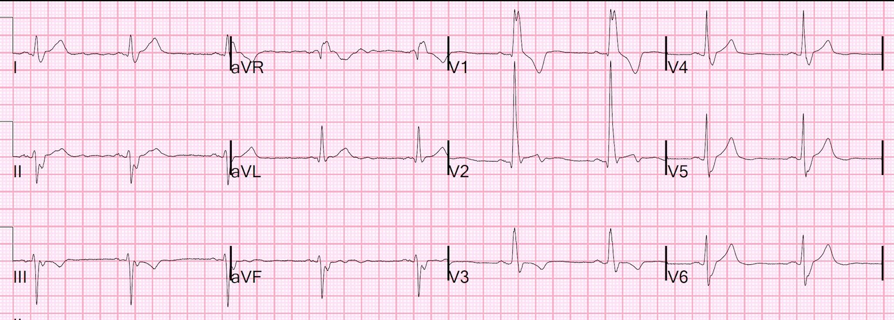
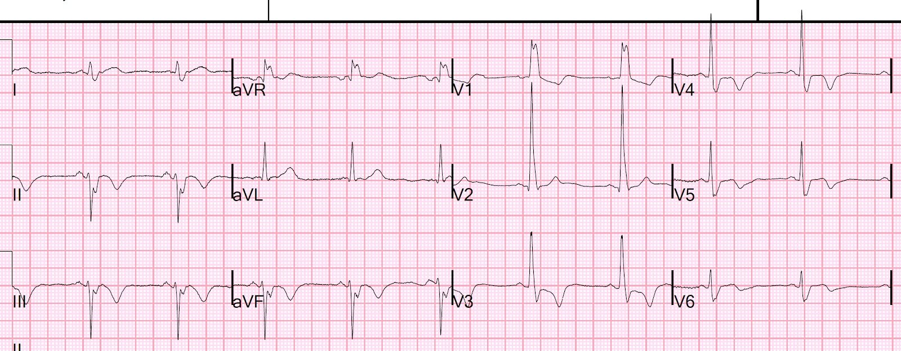
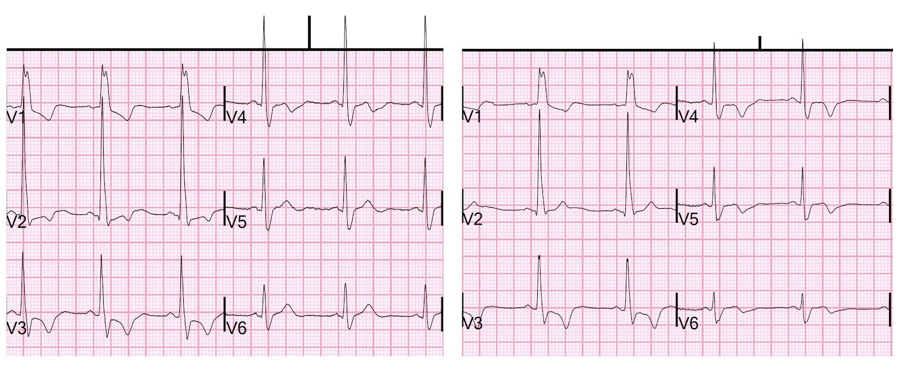
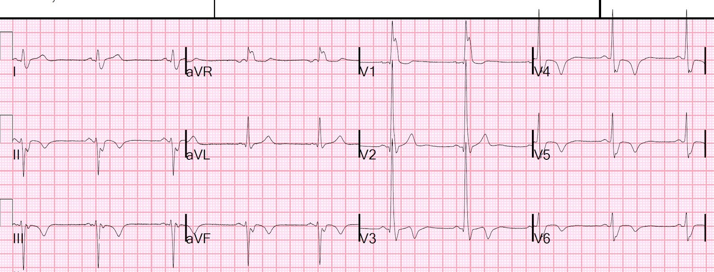
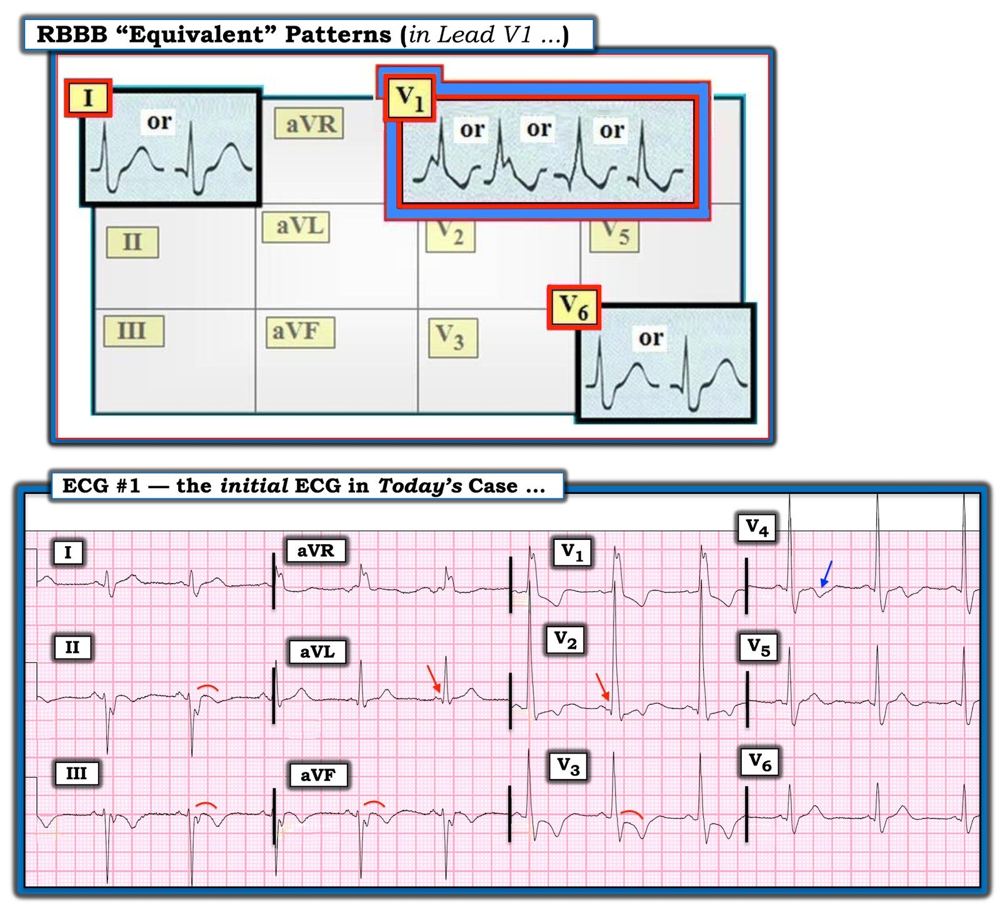

26/04/2022 — RBBB và LAFB: Đoạn ST ở các chuyển đạo dưới có “đồng hướng” không? ST chênh xuống ở V3 có phải chỉ do RBBB?
Bản dịch tiếng Việt của bài "RBBB and LAFB: Is there a “concordance” of the ST segment in inferior leads? Is the ST depression in V3 due to RBBB only?" – Dr. Smith’s ECG Blog. Giữ nguyên toàn bộ 10 hình ảnh của bản gốc.
Điện tâm đồ này được nhắn tin cho tôi.
Sau đó tôi nhận được bệnh sử như sau: Bệnh nhân nam 60 mấy tuổi, tiền sử bệnh phổi tắc nghẽn mạn tính (COPD), đến viện vì khó thở 2 ngày, không đau ngực. Bệnh nhân không giảm oxy máu. Bệnh nhân cũng khó chịu ở bụng và nôn.


Bạn nghĩ gì?
Có RBBB + LAFB rất không điển hình. Không có hình ảnh rSR’ điển hình ở V1-V3. Sóng R thứ nhất cao hơn sóng R thứ 2 ở V1 (bất thường). Không có sóng R’ ở V2 và V3.
Các bác sĩ điều trị cho rằng có “ST chênh xuống đồng hướng” ở các chuyển đạo dưới — tuy nhiên, ST chênh xuống (STD) ở thành dưới trông thấy này là một hình ảnh giả! Thứ có thể trông như ST chênh xuống thực ra là một khía âm trong QRS. Dưới đây tôi đã đánh dấu điểm kết thúc QRS bằng cách vẽ các đường tại điểm kết thúc QRS ở tất cả các chuyển đạo:


Các đường đánh dấu điểm kết thúc QRS
Hãy chú ý rằng “ST chênh xuống đồng hướng” thực ra là một khía âm ở phần cuối QRS.
Câu trả lời của tôi là đây “không phải điện tâm đồ thiếu máu cục bộ.”
Tôi bị thuyết phục bởi RBBB + LAFB với điện thế rất cao rằng các bất thường tái cực đều là thứ phát sau bất thường khử cực. Chỉ có 1 mm ST chênh xuống ở chuyển đạo V3, và đó là mức ST chênh xuống chấp nhận được khi nó ngược hướng với sóng R’.
Vấn đề là không có sóng R’!! Vậy nên đây là sai lầm của tôi.
ST chênh xuống ở V3 đi sau một sóng R dương đơn độc, KHÔNG đi sau sóng R’.
Hãy xem ca RBBB điển hình này, trong đó có ST chênh xuống ở V1-V3 nhưng đi sau sóng R’:


Hãy chú ý rằng có tới 1 mm ST chênh xuống bình thường đi sau sóng R’ ở V1-V3
Tôi không hề biết rằng trong hồ sơ có một điện tâm đồ cũ ghi 9 tháng trước:


Giờ đây thấy rõ có thay đổi chắc chắn ở đoạn ST tại V3 và sóng T tại V4-V6
Diễn tiến của ca bệnh
Đã liên hệ khoa tim mạch. Troponin ban đầu trả về 9,800 ng/L, phù hợp với nhồi máu cơ tim bán cấp. Bệnh nhân được điều trị như Non-OMI (Non-STEMI với động mạch thông).
Troponin các lần sau giảm dần.
Sáng hôm sau, ghi được bản ghi này.


ST chênh xuống ở V3 vẫn tồn tại. Có một số thay đổi ở sóng T
Bản ghi rất giống bản trước. Dưới đây là các chuyển đạo trước tim đặt cạnh nhau:
Điện tâm đồ đầu tiên Sáng hôm sau


Có sóng T đảo ngược mới ở V5 và V6, gợi ý tái tưới máu của một OMI thành bên
Đã làm siêu âm tim chính thức:
Kích thước và chức năng thất trái bình thường; LVEF ước tính là 56%.
Các đoạn đáy dưới-bên và dưới vô động.
Đây là rối loạn vận động thành mới; siêu âm tim trước đây bình thường
Diễn giải: có rối loạn vận động thành sau mới. ST chênh xuống ở V3 này phản ánh một OMI bán cấp của động mạch cấp máu cho thành sau.
Ở giờ thứ 36, ghi được bản ghi này:


Đoạn ST ở V3 phần lớn đã trở về bình thường
Sóng T dương hơn ở V2, và đảo ngược sâu hơn ở V4-V6.
Chụp mạch vành vào ngày thứ 3:
–Bệnh nặng ở đoạn xa của mạch nhỏ (một nhánh), liên quan nhánh LPL1 (nhánh sau bên thứ nhất của động mạch vành trái) nhỏ, có hình ảnh khuyết thuốc rõ.
–Mạch có đường kính dưới 1 mm và dòng chảy cải thiện sau nitroglycerin trong mạch vành (IC TNG).
–Ngoài ra, mảng xơ vữa nhẹ, không có bệnh động mạch vành tắc nghẽn đáng kể trên chụp mạch
–Dựa trên tổn thương khuyết thuốc, nghi ngờ cao tắc do huyết khối-thuyên tắc thứ phát sau rung nhĩ (nguồn gốc ở phía gần) so với nứt vỡ mảng xơ vữa mạch vành đoạn gần, vốn được cho là ít khả năng hơn.
Điều này xác nhận OMI thành sau
Kết luận:
Quả thật có OMI ở một mạch rất nhỏ. Có thể do thuyên tắc. Dù nguyên nhân là gì, nó vẫn biểu hiện trên điện tâm đồ và đã dễ dàng, nhưng sai lầm, bị quy cho RBBB và điện thế cao.
Những điểm cần học:
1. ST chênh xuống chỉ bình thường khi đi sau sóng R’ ở V1-V3. Nếu không có sóng R’, thì ST chênh xuống phải được xem là do thiếu máu cục bộ.
2. Hãy chắc chắn rằng bạn xác định được điểm kết thúc QRS trong bất kỳ blốc nhánh (BBB) nào trước khi quy các độ lệch cho đoạn ST.
3. Luôn so sánh với điện tâm đồ cũ nếu có.

===================================
Bình luận của KEN GRAUER, MD (26/4/2022):
===================================
Một ca thú vị để thảo luận — về điện tâm đồ được gửi cho Dr. Smith để ông đọc. Tôi muốn trình bày một góc nhìn khác về cách tôi tiếp cận điện tâm đồ ban đầu này trong ca hôm nay.
Trước đây tôi đã trình bày cách tiếp cận của mình để chẩn đoán RBBB (Xem Bình luận của tôi ở cuối trang trong bài đăng ngày 1 tháng Bảy năm 2019 trên Dr. Smith’s ECG Blog) trên điện tâm đồ. Lý do cách tiếp cận này cho phép tôi chẩn đoán loại rối loạn dẫn truyền trong chưa đến 5 giây là: i) Bạn chỉ cần nhìn vào 3 chuyển đạo (tức là, các chuyển đạo bên trái I và V6 — và chuyển đạo bên phải V1); và, ii) Giả sử bạn đã loại trừ VT, WPW, tăng kali máu và các ngộ độc khác là nguyên nhân gây QRS giãn rộng — thì trên thực tế, chỉ có 3 đáp án khả dĩ (tức là, RBBB, LBBB hoặc IVCD).
- RBBB (blốc nhánh phải – Right Bundle Branch Block) — được định nghĩa là một nhịp trên thất trong đó phức bộ QRS rộng — và — hình dạng QRS ở 3 chuyển đạo MẤU CHỐT phù hợp với RBBB (tức là, hình ảnh rsR’ hoặc “tương đương” của nó ở chuyển đạo bên phải V1 — và sóng R kèm sóng S tận rộng ở các chuyển đạo bên trái I và V6).
- LƯU Ý: Với những ai quan tâm đến cách tiếp cận dễ–dùng của tôi, cho phép chẩn đoán loại rối loạn dẫn truyền trên điện tâm đồ trong vòng vài giây — Mời xem ECG Video dài 13 phút và tệp PDF tải về ở cuối trang này.
Tôi tập trung bình luận vào điện tâm đồ ban đầu trong ca hôm nay. Để rõ ràng — tôi đã đặt lại bản ghi này ở ô dưới của Hình 1.
- Như Dr. Smith đã nêu — điện tâm đồ #1 (Ô dưới trong Hình 1) — biểu hiện nhịp xoang với QRS giãn rộng do blốc hai phân nhánh ( = RBBB/LAHB).
- Với một hình ảnh RBBB “điển hình” (tức là không có yếu tố gây nhiễu tiềm tàng nào khác) — hình dạng QRS ở chuyển đạo V1 bên phải phải biểu hiện hình ảnh rsR’ hoặc rSR’ ba pha, trong đó: i) Có một sóng lệch dương ban đầu, dưới dạng sóng r nhỏ, mảnh; ii) Tiếp theo sóng lệch r ban đầu này là sóng S đi xuống dưới đường nền; và, iii) Có sóng R’ tận (sóng lệch “tai thỏ” bên phải cao hơn) — trong đó R’ này mảnh và cao hơn sóng lệch dương r ban đầu.
Dù vậy — thường gặp các hình dạng QRS khác ở chuyển đạo V1 vẫn phù hợp với RBBB mặc dù không biểu hiện hình ảnh rsR’ hoặc rSR’ ba pha điển hình.
- Trên một điện tâm đồ bình thường — phức bộ QRS ở người trưởng thành sẽ chủ yếu âm ở chuyển đạo V1 bên phải. Đó là vì khối cơ thất trái chiếm ưu thế so với khối cơ thất phải ở người trưởng thành — nên vectơ khử cực chủ yếu hướng sang trái (hay hướng ra xa chuyển đạo V1 — đó là lý do bình thường thấy sóng S sâu ở chuyển đạo V1).
- NẾU nhịp là trên thất — và — phức bộ QRS rộng và chủ yếu dương ở chuyển đạo bên phải V1 (tức là, giống bất kỳ hình ảnh QRS nào trong ô trên của Hình 1) — thì vẫn có thể có RBBB mặc dù không có hình ảnh rsR’ hoặc rSR’ ba pha ở chuyển đạo V1 — miễn là có sóng S tận rộng ở các chuyển đạo bên trái (tức là, ở chuyển đạo I và V6).
- Các lý do khiến phức bộ ba pha điển hình (rsR’; tai thỏ bên phải cao hơn) ở chuyển đạo V1 có thể mất đi ở một số bệnh nhân RBBB gồm sẹo (bệnh cơ tim) và/hoặc nhồi máu (thường được gợi ý bởi qR ở chuyển đạo V1 và/hoặc V2).
SUY NGHĨ CỦA TÔI về điện tâm đồ ban đầu của ca hôm nay:
Nhịp trên điện tâm đồ #1 là nhịp xoang. Khoảng PR bình thường. Phức bộ QRS rộng. Chẩn đoán RBBB được khẳng định nhờ phức bộ QRS chủ yếu dương ở chuyển đạo V1 (phù hợp với một trong các hình ảnh “Tương đương” RBBB trình bày trong Hình 1) — kèm theo sự hiện diện của sóng S tận rộng ở cả chuyển đạo I và V6.
- LAHB (blốc phân nhánh trái trước – Left Anterior HemiBlock) được chẩn đoán kèm theo RBBB — dựa vào tính chủ yếu âm ở đoạn đi xuống ban đầu của sóng S ở mỗi chuyển đạo dưới.
- Có phân mảnh quá mức ở một số phức bộ QRS trên bản ghi này (tức là, ở sườn đi lên của sóng S tại các chuyển đạo II, III, aVF — và ở sóng R trát đậm tại các chuyển đạo aVR và V1). Mức độ phân mảnh như vậy thường hàm ý “sẹo” và/hoặc nhồi máu cũ.
- Có sóng Q ở các chuyển đạo aVL và V2. Sóng Q ở chuyển đạo V2 chắc chắn không bình thường (mũi tên ĐỎ ở chuyển đạo này trong Hình 1) — vì như đã mô tả ở trên, với RBBB “điển hình”, bình thường thấy sóng lệch dương ban đầu ở chuyển đạo V1 (và thường cả ở chuyển đạo V2). Dù chưa khẳng định được — sóng Q nhỏ này ở chuyển đạo V2 có thể là dấu hiệu của nhồi máu thành trước đã xảy ra vào một thời điểm nào đó.
- Sóng Q ở chuyển đạo aVL có thể có hoặc không có ý nghĩa (mũi tên ĐỎ ở chuyển đạo này). Đúng là sóng q vách bình thường thường gặp ở một hoặc nhiều chuyển đạo bên (do vectơ khử cực vách hướng từ trái sang phải, vốn không đổi hướng khi có RBBB) — nhưng tôi thấy sóng Q ở chuyển đạo aVL trên điện tâm đồ #1 hơi nổi bật hơn so với mong đợi của một sóng q vách.
- Như tôi đã ôn lại trong Bình luận của tôi ở bài đăng ngày 1 tháng Bảy năm 2019 — RBBB hoặc LBBB điển hình đều làm thay đổi trình tự khử cực và tái cực thất theo cách có thể dự đoán được ở 3 chuyển đạo MẤU CHỐT. Về các thay đổi sóng ST-T mong đợi với RBBB đơn thuần — ta nên thấy đoạn ST và sóng T ở các chuyển đạo I, V1 và V6 hướng ngược chiều với sóng lệch QRS cuối cùng ở chuyển đạo đó. Đây chính xác là điều ta thấy trên điện tâm đồ #1 — ở chỗ sóng T dương ở các chuyển đạo I và V6 đúng là hướng ngược chiều với sóng S tận rộng — và sóng ST-T chênh xuống ở chuyển đạo V1 đúng là hướng ngược chiều với phức bộ RR’ dương hoàn toàn mà ta thấy ở chuyển đạo V1.
Điểm MẤU CHỐT: Trong Hình 1 — có những chuyển đạo ngực khác trên điện tâm đồ #1 không biểu hiện hình dạng sóng ST-T như mong đợi nếu điều duy nhất đang xảy ra là RBBB đơn thuần.
- Chuyển đạo V2 quả thật bất thường khi có sóng R dương khổng lồ (cao hơn 30 mm). Giả sử điện cực chuyển đạo ngực V2 được đặt đúng — thì sóng Q nhỏ ở chuyển đạo này là bất thường. Đoạn ST ở chuyển đạo này cũng bất thường và có lẽ là bệnh lý — ở chỗ thay vì dốc xuống ban đầu (như thấy ở đoạn ST tại chuyển đạo V1) — đoạn ST hơi chênh xuống ở chuyển đạo V2 lại dốc lên!
- Như đã nhấn mạnh ở trên — bình thường có thể có một mức sóng ST-T chênh xuống ở chuyển đạo V1 bên phải khi có RBBB. Nhưng khi điều duy nhất đang xảy ra là RBBB — thì mức độ tương đối của sóng ST-T chênh xuống này phải giảm dần khi đi dọc qua vùng trước tim. Đây không phải điều ta thấy ở chuyển đạo V3 — trong đó mức ST chênh xuống tại điểm J lại tăng lên (so với chuyển đạo V2) — và hình dạng đoạn ST giờ rõ ràng là dạng vòm (coving) (giống đường cong màu ĐỎ ở chuyển đạo này) — tiếp theo là sóng T đảo ngược đối xứng sâu hơn. Đây không phải điều nên thấy với RBBB đơn thuần.
- Sóng T vẫn đảo ngược ở chuyển đạo V4 (mũi tên XANH LAM) — điều này một lần nữa không nên được mong đợi với RBBB đơn thuần.
Ở các chuyển đạo chi:
Thường thấy một mức sóng T đảo ngược ở các chuyển đạo III và aVF khi QRS chủ yếu âm. Sóng T ở chuyển đạo II ít có khả năng đảo ngược hơn trừ khi có thiếu máu cục bộ.
- Dù vậy — hình dạng của đoạn ST trước khi chuyển thành sóng T đảo ngược đối xứng không chỉ ở các chuyển đạo III và aVF — mà cả ở chuyển đạo II — là dạng vòm (giống các đường cong màu ĐỎ ở các chuyển đạo này). Đây không phải hình dạng bình thường của sóng ST-T ở các chuyển đạo dưới với LAHB đơn thuần.
ĐIỀU CỐT LÕI: Không có bệnh sử nào được cung cấp khi tôi lần đầu xem bản ghi ban đầu của ca hôm nay. Điện tâm đồ cho thấy nhịp xoang với blốc hai phân nhánh (tức là, RBBB/LAHB) không rõ có từ bao giờ.
- Tôi không nghĩ các thay đổi sóng ST-T mô tả ở trên gợi ý tắc mạch vành cấp.
- Tùy thuộc vào điện tâm đồ cũ và Tiền sử bệnh trước đây cũng như hiện tại — tôi nghĩ điện tâm đồ #1 có thể phản ánh thiếu máu cục bộ và/hoặc nhồi máu gần đây.
- Với blốc hai phân nhánh — QRS phân mảnh ở không dưới 5 chuyển đạo — các sóng Q có thể có ý nghĩa ở chuyển đạo aVL và V2 — và các bất thường sóng ST-T ở nhiều chuyển đạo trông như không chỉ đơn thuần do RBBB và LAHB — tôi nghi ngờ rằng ít nhất, bệnh nhân này có bệnh tim nền đáng kể.


=======================================

ECG Media Pearl #22 (Video dài 13:15 phút) — Ôn lại một cách tiếp cận dễ–dùng cho phép chẩn đoán các blốc nhánh (Bundle Branch Blocks) trong chưa đến 5 giây.
- BẤM VÀO ĐÂY để tải tệp PDF 12 trang này về chẩn đoán BBB trên điện tâm đồ (trích từ Grauer K: ECG-2014-ePub).